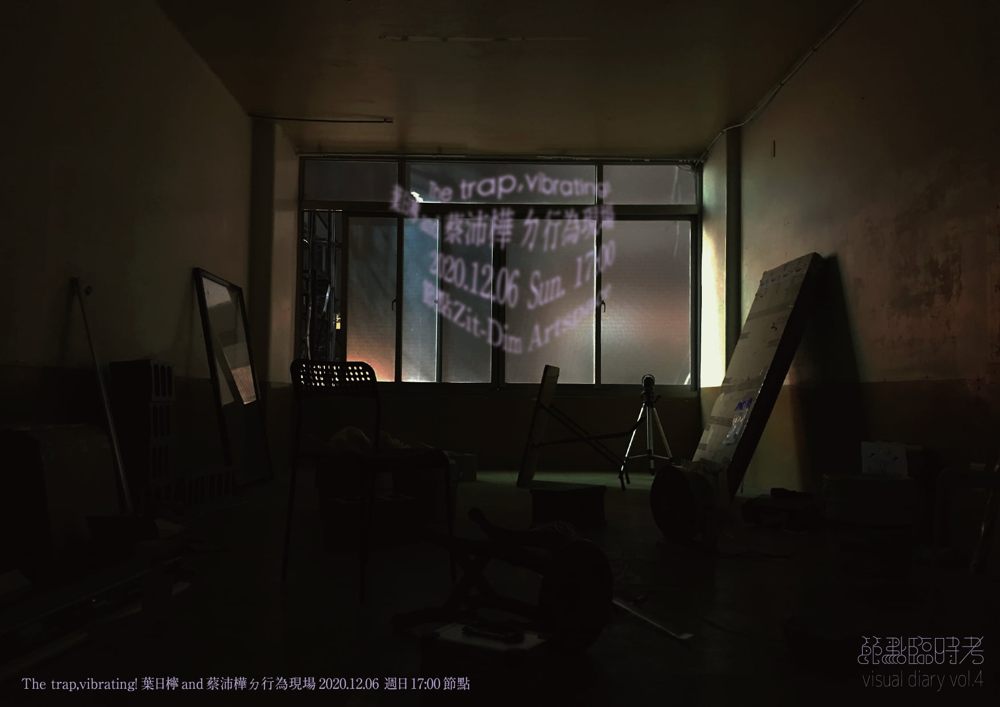
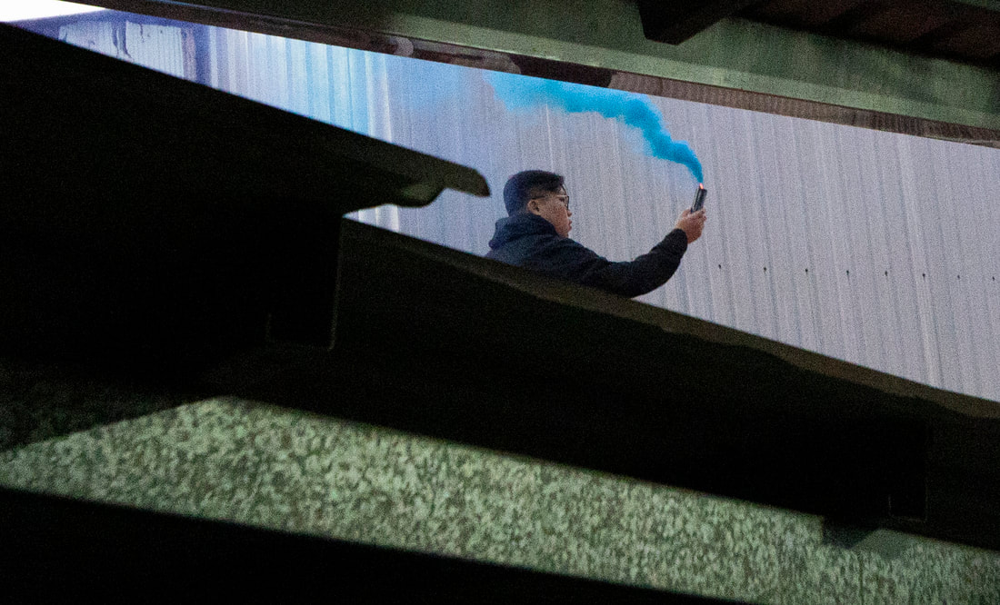
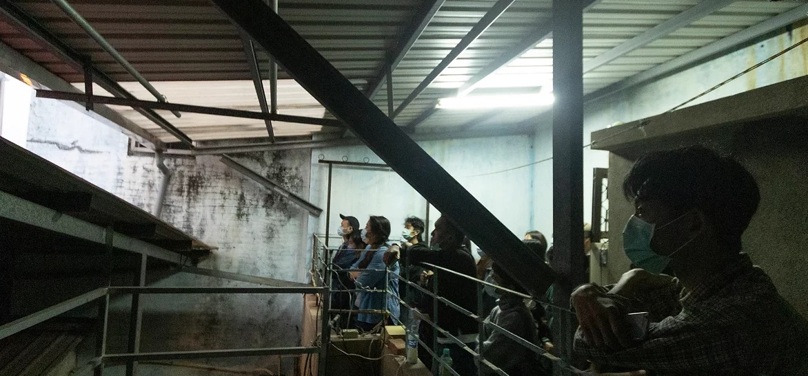
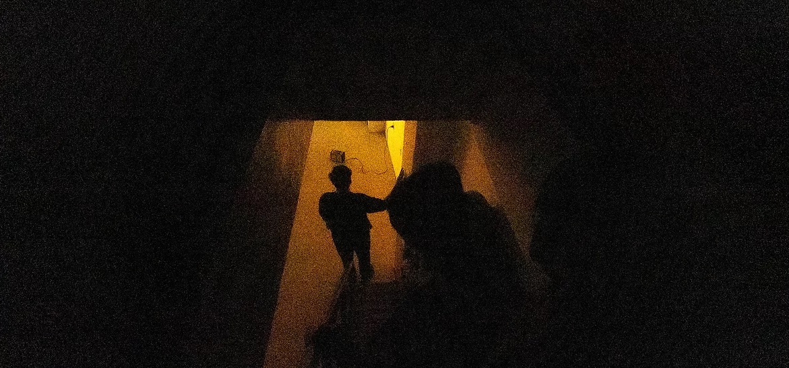
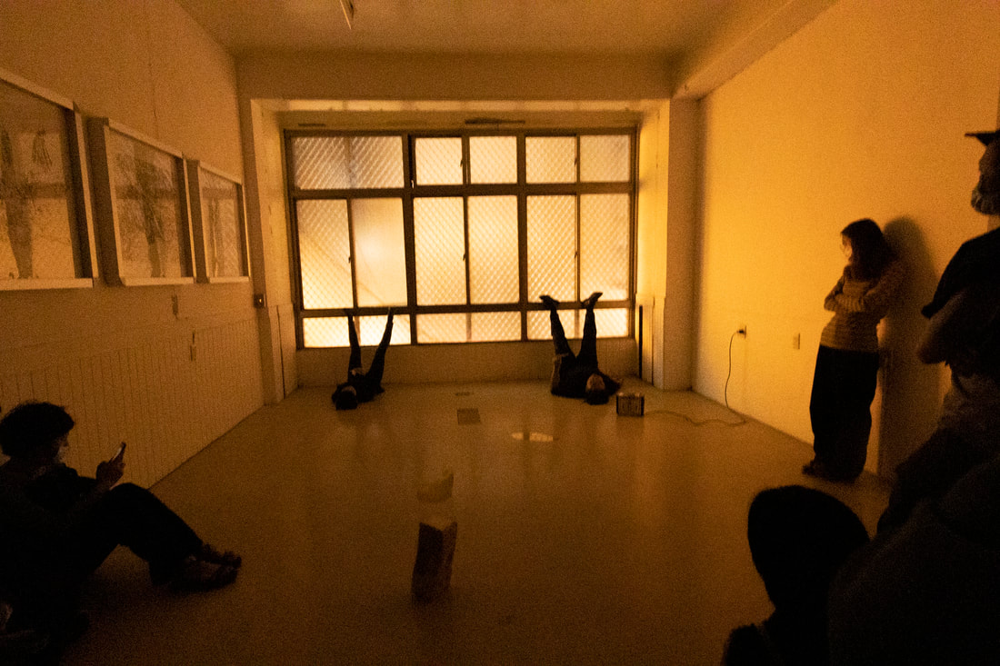
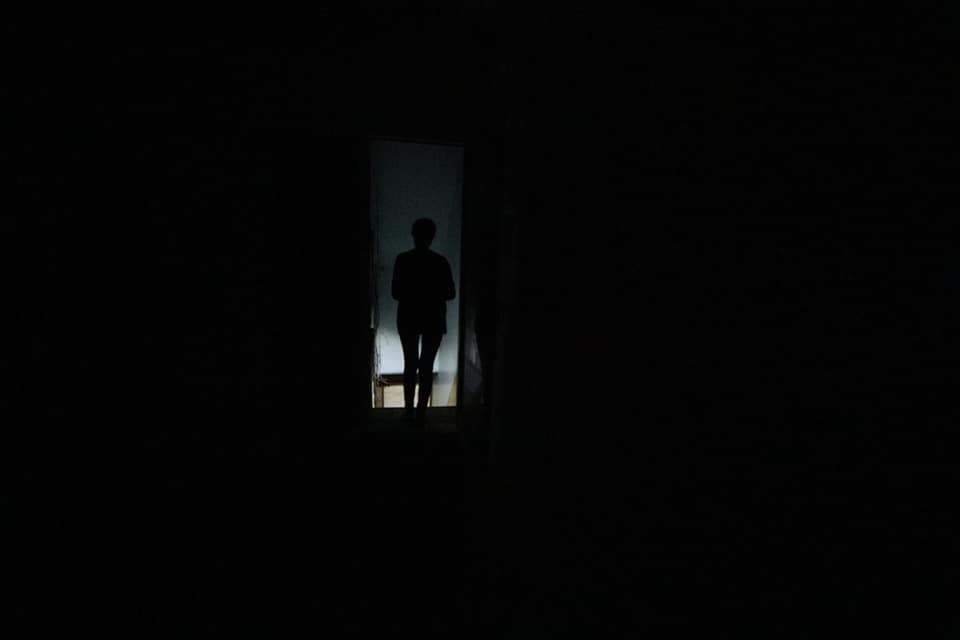
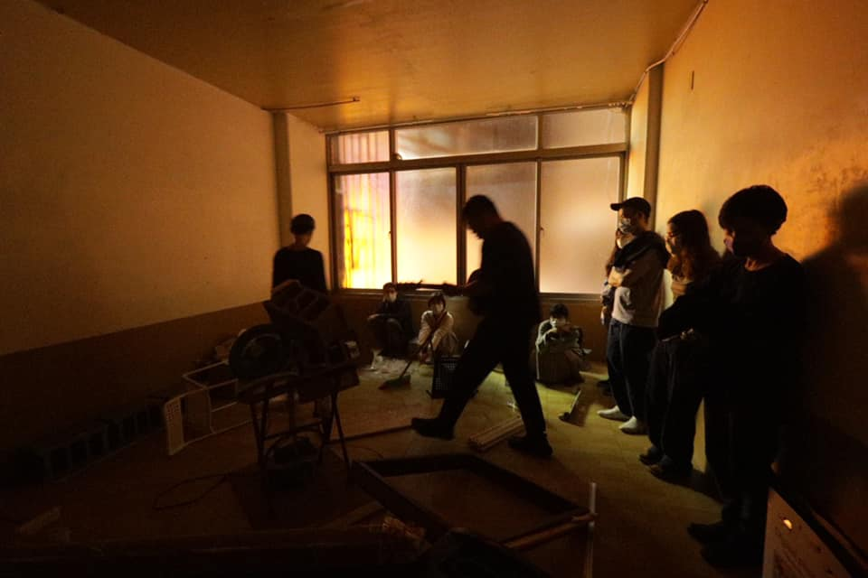
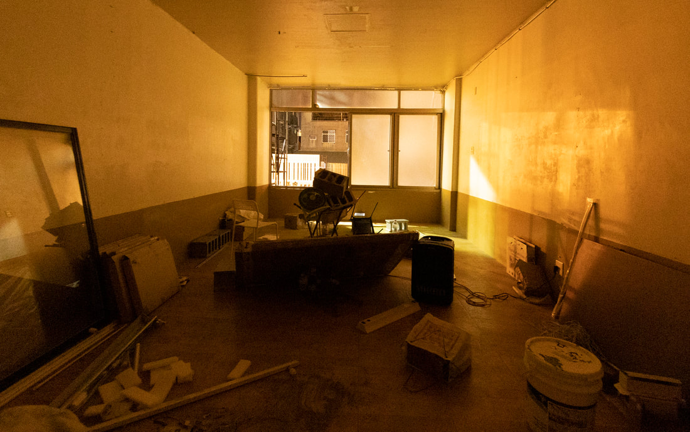

The trap, vibrating!
節點臨時考 visual diary vol.4
● 2020.12.06，週日，17:00，節點
● 台南市中西區永福路二段84號（永福國小旁）
檸ㄉ簡述：
我看見沛樺的桌面上放了幾本在圖書館借閱的書，幾乎都是關於行為表演的內容，我跟她說，有幾本被我放在某個書架上，都沒有歸位，已經過了好幾個月了。已經過了好幾個月沒有操作過行為，有點癢，想抓癢，翻閱以前的網路相簿，看見許多生活的片段，我就標記了下來。
所以，這次的行為現場，關於，片段、相遇、離開、錯過、和曾經的歌。
沛ㄉ簡述：
第一次的表演經驗，大概是在幼稚園的時候吧，那時候我飾演一顆聖誕樹。記憶中的我，因為站在舞台上看著觀眾發起呆，而忘記下台；起初，雖然說好了，回過神來，卻發現自己一點都不喜歡一直被別人看著。可是誰也沒想到，最後我忽然想起很久以前的那個什麼，竟然開始說起話來。






